Agregační shlukování – Vývoj
Generace 0
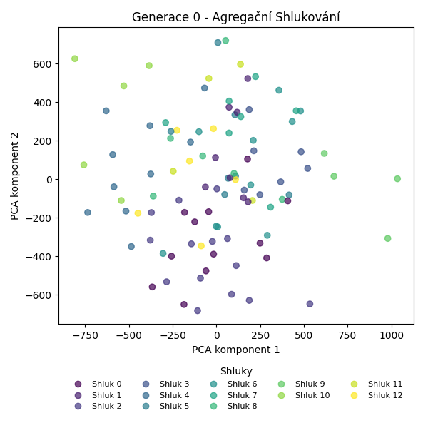
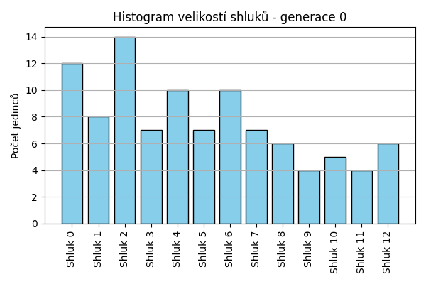
Generace 1

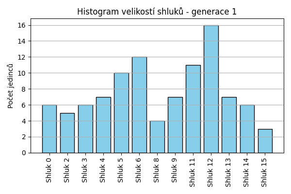
Posun centroidů mezi generací 0 → 1:
- Shluk 0: 811.0719
- Shluk 1: 780.5346
- Shluk 2: 817.6779
- Shluk 3: 873.3575
- Shluk 4: 1018.3990
- Shluk 5: 861.6940
- Shluk 6: 894.5549
- Shluk 7: 839.8325
- Shluk 8: 1219.7885
- Shluk 9: 1073.3230
- Shluk 10: 870.2303
- Shluk 11: 1212.1733
- Shluk 12: 1024.7984

Generace 2


Posun centroidů mezi generací 1 → 2:
- Shluk 0: 807.5876
- Shluk 1: 520.2997
- Shluk 2: 614.3750
- Shluk 3: 561.1446
- Shluk 4: 860.3469
- Shluk 5: 687.5505
- Shluk 6: 958.8192
- Shluk 7: 774.7353
- Shluk 8: 1144.1593
- Shluk 9: 927.1763

Generace 3
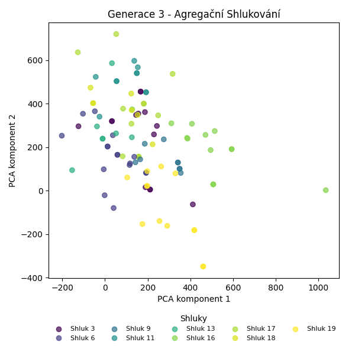
Posun centroidů mezi generací 2 → 3:
- Shluk 0: 752.7418
- Shluk 1: 497.8645
- Shluk 2: 538.2787
- Shluk 3: 581.2830
- Shluk 4: 1041.4417
- Shluk 5: 710.5418
- Shluk 6: 690.7927
- Shluk 7: 885.2024
- Shluk 8: 117.0112
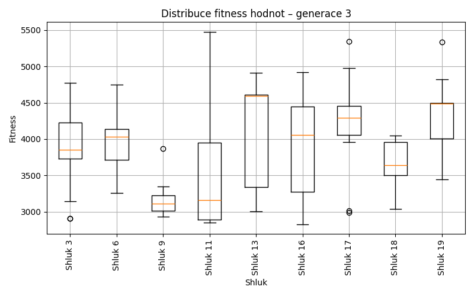
Generace 4

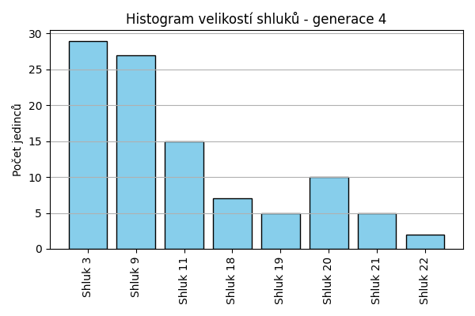
Posun centroidů mezi generací 3 → 4:
- Shluk 0: 675.3198
- Shluk 1: 479.9110
- Shluk 2: 767.1448
- Shluk 3: 374.4146
- Shluk 4: 856.5640
- Shluk 5: 191.6663
- Shluk 6: 1031.3382
- Shluk 7: 540.1325

Generace 5


Posun centroidů mezi generací 4 → 5:
- Shluk 0: 230.6756
- Shluk 1: 181.6423
- Shluk 2: 644.1894
- Shluk 3: 973.2070
- Shluk 4: 599.8962
- Shluk 5: 593.6535
- Shluk 6: 820.4627

Generace 6
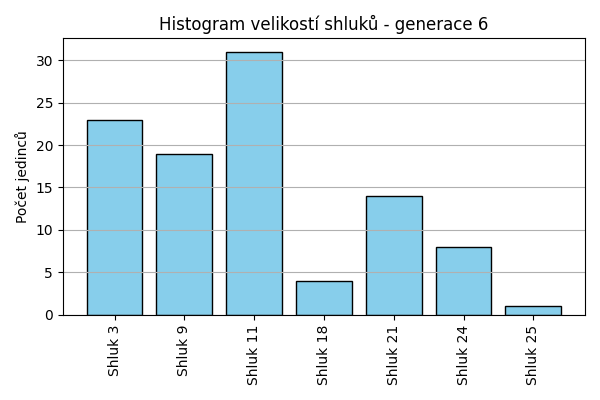
Posun centroidů mezi generací 5 → 6:
- Shluk 0: 886.8885
- Shluk 1: 129.9835
- Shluk 2: 691.3011
- Shluk 3: 1063.6863
- Shluk 4: 917.5422
- Shluk 5: 740.8822
- Shluk 6: 920.6752
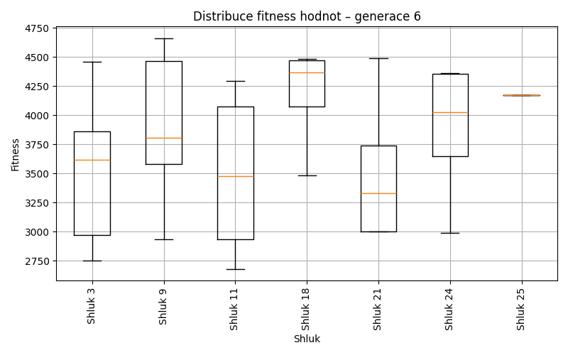
Generace 7

Posun centroidů mezi generací 6 → 7:
- Shluk 0: 869.9367
- Shluk 1: 558.6694
- Shluk 2: 983.9174
- Shluk 3: 667.1836
- Shluk 4: 649.2392
- Shluk 5: 840.7525
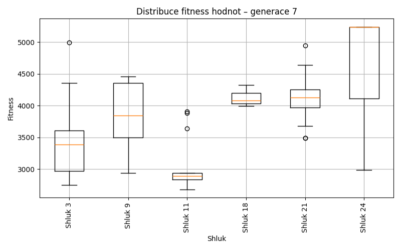
Generace 8
Posun centroidů mezi generací 7 → 8:
- Shluk 0: 288.4485
- Shluk 1: 496.6632
- Shluk 2: 839.7578
- Shluk 3: 195.0286
- Shluk 4: 613.4883
- Shluk 5: 892.9571

Generace 9

Posun centroidů mezi generací 8 → 9:
- Shluk 0: 418.3929
- Shluk 1: 487.6265
- Shluk 2: 280.8761
- Shluk 3: 629.6772
- Shluk 4: 875.3471
- Shluk 5: 545.2165
Generace 10

Posun centroidů mezi generací 9 → 10:
- Shluk 0: 255.4910
- Shluk 1: 402.7424
- Shluk 2: 395.5469
- Shluk 3: 585.3495
- Shluk 4: 975.7781
- Shluk 5: 631.3903
- Shluk 6: 734.0523

Generace 11


Posun centroidů mezi generací 10 → 11:
- Shluk 0: 341.5921
- Shluk 1: 290.5119
- Shluk 2: 462.9359
- Shluk 3: 625.8450
- Shluk 4: 300.5419
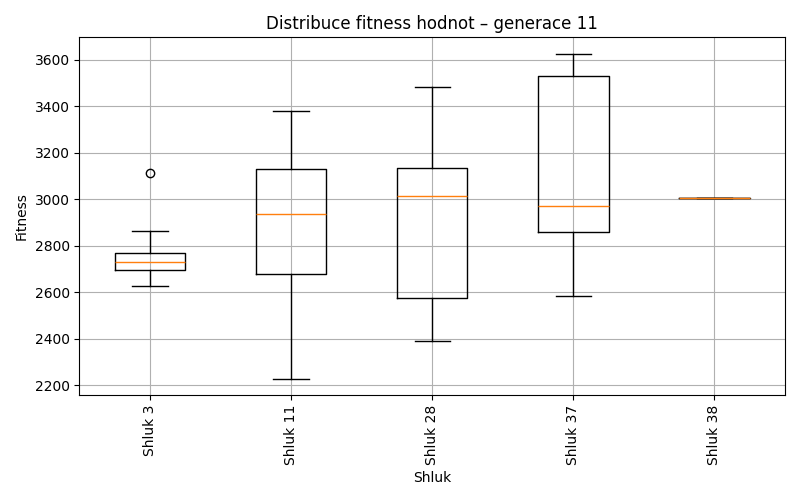
Generace 12

Posun centroidů mezi generací 11 → 12:
- Shluk 0: 320.7216
- Shluk 1: 502.9805
- Shluk 2: 820.9875
- Shluk 3: 936.5153
- Shluk 4: 797.5436
Generace 13


Posun centroidů mezi generací 12 → 13:
- Shluk 0: 159.7267
- Shluk 1: 758.5925
- Shluk 2: 673.1469
- Shluk 3: 536.4903
- Shluk 4: 872.4676
- Shluk 5: 422.2068
Generace 14

Posun centroidů mezi generací 13 → 14:
- Shluk 0: 317.3122
- Shluk 1: 817.1559
- Shluk 2: 122.7352
- Shluk 3: 915.4978
- Shluk 4: 344.5376
- Shluk 5: 821.5972
- Shluk 6: 822.4085
Generace 15


Posun centroidů mezi generací 14 → 15:
- Shluk 0: 237.3203
- Shluk 1: 741.8804
- Shluk 2: 107.9521
- Shluk 3: 1058.1261
- Shluk 4: 779.5223
- Shluk 5: 598.2299
- Shluk 6: 580.8436
- Shluk 7: 906.1468

Generace 16

Posun centroidů mezi generací 15 → 16:
- Shluk 0: 353.1957
- Shluk 1: 564.2799
- Shluk 2: 507.3072
- Shluk 3: 769.0962
- Shluk 4: 620.2860
Generace 17

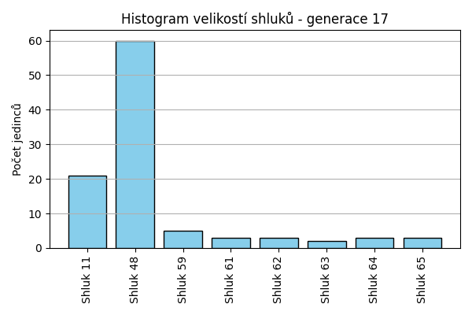
Posun centroidů mezi generací 16 → 17:
- Shluk 0: 602.2037
- Shluk 1: 194.6946
- Shluk 2: 536.2930
- Shluk 3: 493.7320
- Shluk 4: 522.9024

Generace 18

Posun centroidů mezi generací 17 → 18:
- Shluk 0: 716.6534
- Shluk 1: 153.4468
- Shluk 2: 251.5081
- Shluk 3: 622.6112
- Shluk 4: 698.0595
- Shluk 5: 732.4018
- Shluk 6: 829.1212
- Shluk 7: 888.1480
Generace 19
Posun centroidů mezi generací 18 → 19:
- Shluk 0: 468.6103
- Shluk 1: 268.4709
- Shluk 2: 102.6317
- Shluk 3: 542.5321
- Shluk 4: 827.7099
- Shluk 5: 549.4157
- Shluk 6: 1086.4702
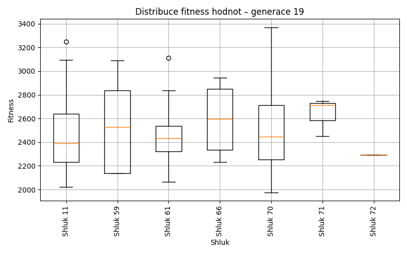
Generace 20
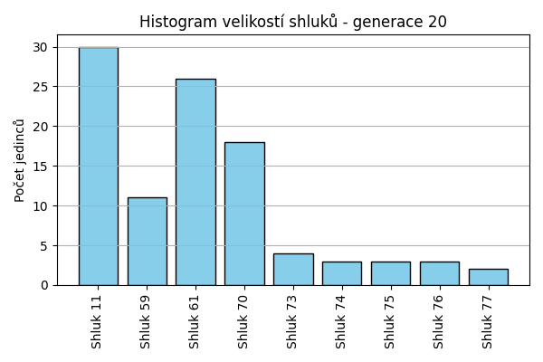
Posun centroidů mezi generací 19 → 20:
- Shluk 0: 56.1058
- Shluk 1: 830.5006
- Shluk 2: 318.3945
- Shluk 3: 649.8758
- Shluk 4: 150.3638
- Shluk 5: 430.5983
- Shluk 6: 836.1910
Generace 21
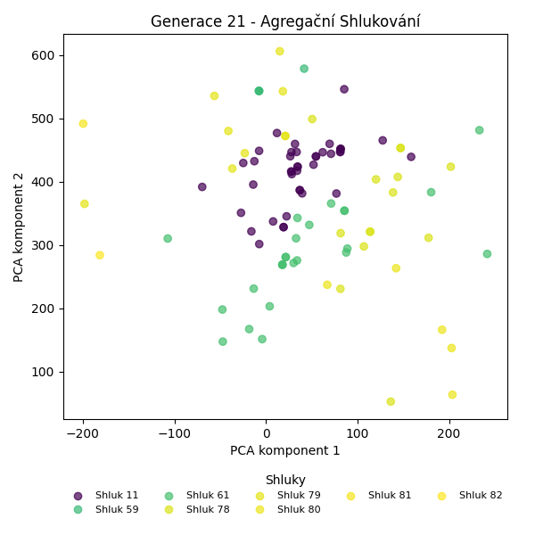
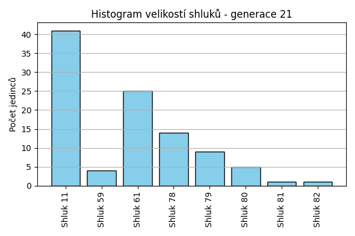
Posun centroidů mezi generací 20 → 21:
- Shluk 0: 398.6968
- Shluk 1: 866.5587
- Shluk 2: 268.4323
- Shluk 3: 665.7956
- Shluk 4: 1080.2546
- Shluk 5: 375.8619
- Shluk 6: 777.0196
- Shluk 7: 645.2946
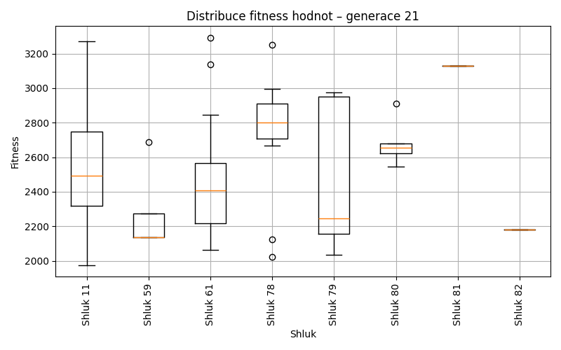
Generace 22
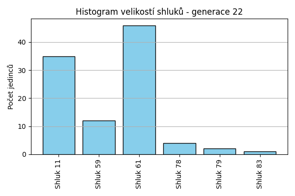
Posun centroidů mezi generací 21 → 22:
- Shluk 0: 115.8235
- Shluk 1: 426.6145
- Shluk 2: 679.5673
- Shluk 3: 1026.8947
- Shluk 4: 1116.1095
- Shluk 5: 142.6464
Generace 23

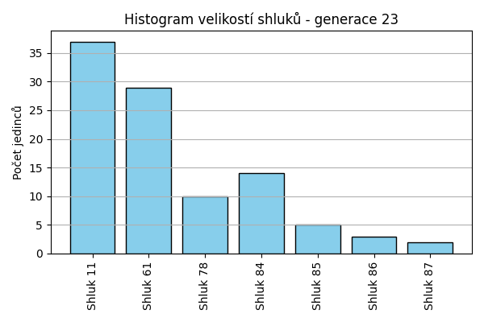
Posun centroidů mezi generací 22 → 23:
- Shluk 0: 119.3093
- Shluk 1: 234.7908
- Shluk 2: 715.5355
- Shluk 3: 576.7689
- Shluk 4: 817.1807
- Shluk 5: 783.4095
Generace 24

Posun centroidů mezi generací 23 → 24:
- Shluk 0: 397.7672
- Shluk 1: 435.8013
- Shluk 2: 617.3597
- Shluk 3: 653.0480
- Shluk 4: 426.9324
- Shluk 5: 793.1838
- Shluk 6: 749.4494

Generace 25
Posun centroidů mezi generací 24 → 25:
- Shluk 0: 171.3784
- Shluk 1: 756.8258
- Shluk 2: 606.9901
- Shluk 3: 219.7169
- Shluk 4: 744.1710
- Shluk 5: 291.0437
- Shluk 6: 844.2522
Generace 26


Posun centroidů mezi generací 25 → 26:
- Shluk 0: 409.4850
- Shluk 1: 741.6511
- Shluk 2: 591.0885
- Shluk 3: 420.9150
- Shluk 4: 787.5156
- Shluk 5: 836.7930
- Shluk 6: 734.9391
Generace 27
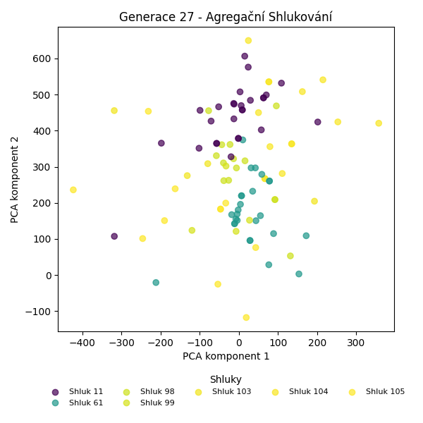
Posun centroidů mezi generací 26 → 27:
- Shluk 0: 222.1831
- Shluk 1: 459.0561
- Shluk 2: 427.8789
- Shluk 3: 832.3836
- Shluk 4: 631.5734
- Shluk 5: 898.1149
- Shluk 6: 699.2373

Generace 28
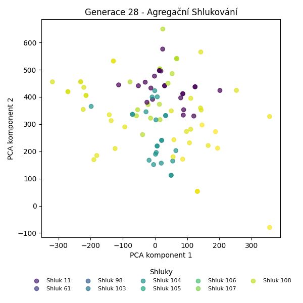
Posun centroidů mezi generací 27 → 28:
- Shluk 0: 283.9677
- Shluk 1: 519.7979
- Shluk 2: 747.1857
- Shluk 3: 751.2255
- Shluk 4: 507.9253
- Shluk 5: 737.8865
- Shluk 6: 878.6413

Generace 29
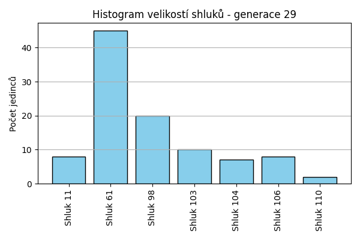
Posun centroidů mezi generací 28 → 29:
- Shluk 0: 687.5499
- Shluk 1: 335.5470
- Shluk 2: 134.7221
- Shluk 3: 286.2155
- Shluk 4: 1027.8426
- Shluk 5: 618.7299
- Shluk 6: 844.6855
Generace 30
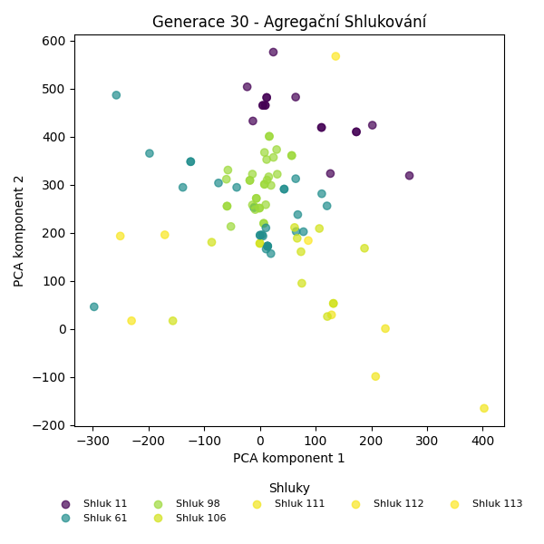

Posun centroidů mezi generací 29 → 30:
- Shluk 0: 729.2218
- Shluk 1: 95.6949
- Shluk 2: 649.3147
- Shluk 3: 621.9956
- Shluk 4: 966.9319
- Shluk 5: 756.7889
- Shluk 6: 846.7565
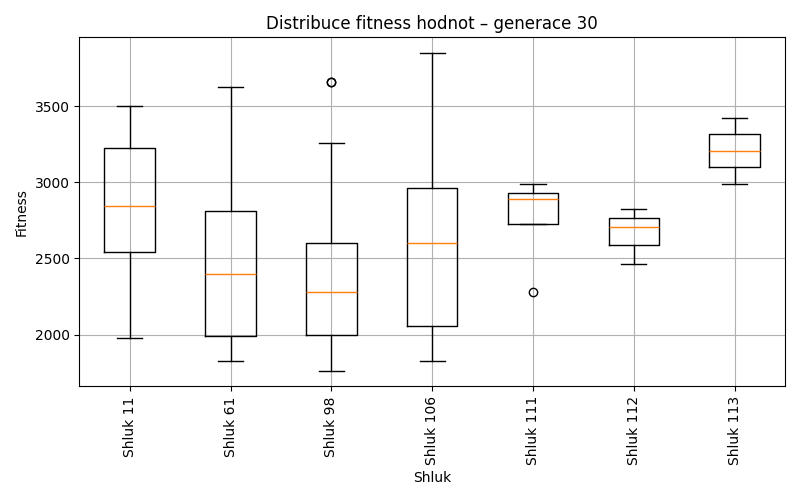
Generace 31
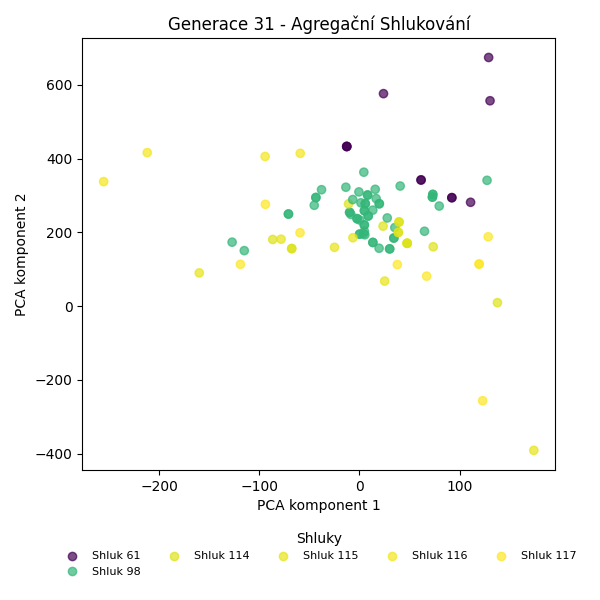

Posun centroidů mezi generací 30 → 31:
- Shluk 0: 668.5483
- Shluk 1: 344.1337
- Shluk 2: 724.5412
- Shluk 3: 591.1585
- Shluk 4: 495.9344
- Shluk 5: 592.8881
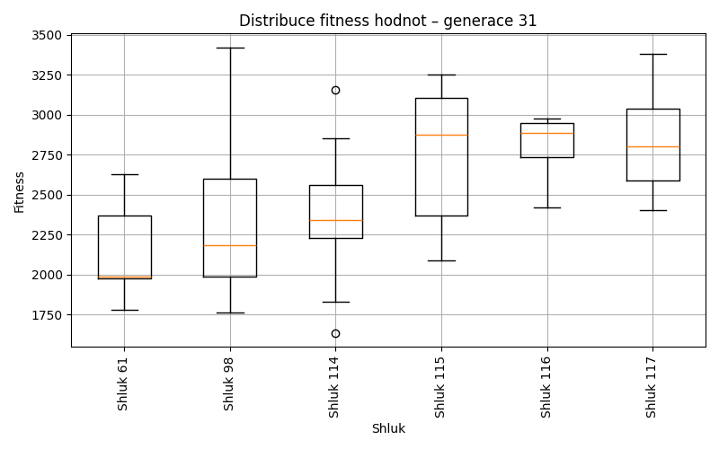
Generace 32
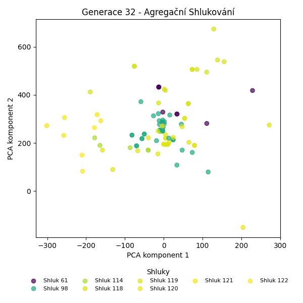

Posun centroidů mezi generací 31 → 32:
- Shluk 0: 538.7024
- Shluk 1: 428.6370
- Shluk 2: 565.6023
- Shluk 3: 675.0220
- Shluk 4: 716.3978
- Shluk 5: 592.3326

Generace 33

Posun centroidů mezi generací 32 → 33:
- Shluk 0: 304.6847
- Shluk 1: 573.1621
- Shluk 2: 863.6085
- Shluk 3: 776.3925
- Shluk 4: 687.4550
- Shluk 5: 797.1126
- Shluk 6: 511.2972
- Shluk 7: 906.2081

Generace 34


Posun centroidů mezi generací 33 → 34:
- Shluk 0: 770.9086
- Shluk 1: 487.0710
- Shluk 2: 844.6327
- Shluk 3: 771.8591
- Shluk 4: 512.6880
- Shluk 5: 804.0053

Generace 35

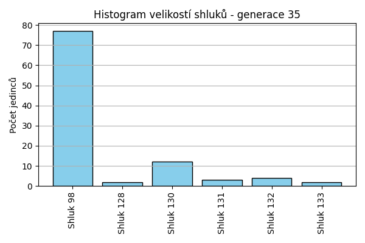
Posun centroidů mezi generací 34 → 35:
- Shluk 0: 717.9020
- Shluk 1: 423.8762
- Shluk 2: 680.9403
- Shluk 3: 497.4258
- Shluk 4: 569.2762
- Shluk 5: 1106.7848

Generace 36

Posun centroidů mezi generací 35 → 36:
- Shluk 0: 352.2211
- Shluk 1: 521.8750
- Shluk 2: 654.6412
- Shluk 3: 845.5477
- Shluk 4: 834.3727
- Shluk 5: 1137.6269
Generace 37
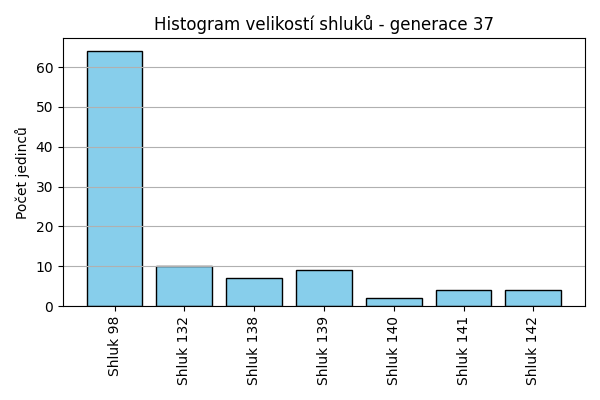
Posun centroidů mezi generací 36 → 37:
- Shluk 0: 684.4268
- Shluk 1: 435.2194
- Shluk 2: 384.9743
- Shluk 3: 832.7633
- Shluk 4: 736.9404
- Shluk 5: 672.0248
- Shluk 6: 779.1189
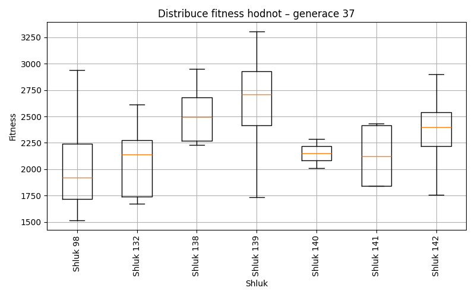
Generace 38


Posun centroidů mezi generací 37 → 38:
- Shluk 0: 591.7566
- Shluk 1: 347.7791
- Shluk 2: 305.7660
- Shluk 3: 718.1749
- Shluk 4: 568.2213
- Shluk 5: 545.3390
- Shluk 6: 907.5413

Generace 39
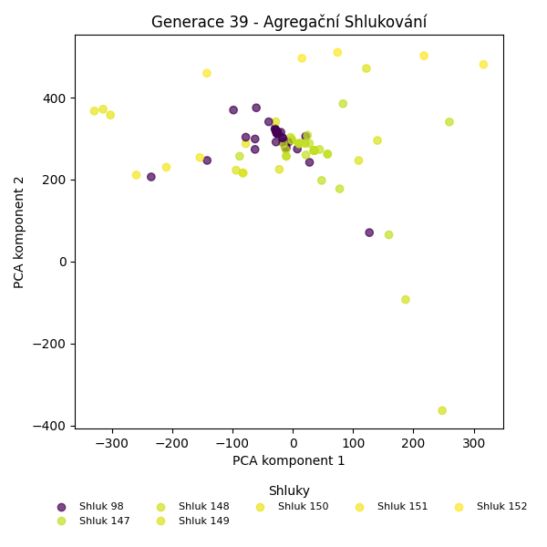
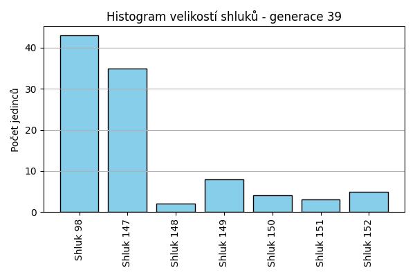
Posun centroidů mezi generací 38 → 39:
- Shluk 0: 635.1123
- Shluk 1: 795.0594
- Shluk 2: 754.8515
- Shluk 3: 910.9929
- Shluk 4: 704.8286
- Shluk 5: 393.0279
- Shluk 6: 651.6002

Generace 40

Posun centroidů mezi generací 39 → 40:
- Shluk 0: 639.8677
- Shluk 1: 1118.8596
- Shluk 2: 142.5891
- Shluk 3: 281.5304

Generace 41


Posun centroidů mezi generací 40 → 41:
- Shluk 0: 347.7541
- Shluk 1: 919.0602
- Shluk 2: 382.1347
- Shluk 3: 820.9213
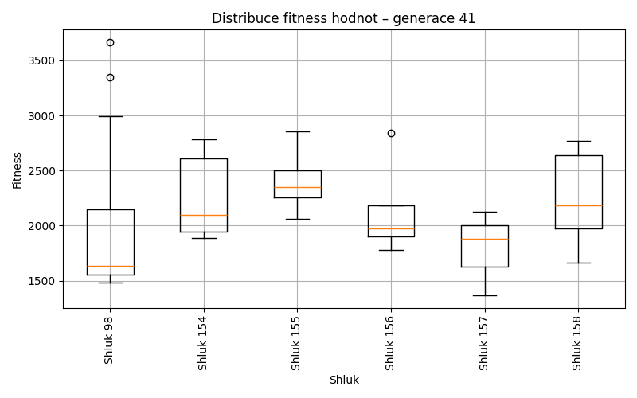
Generace 42


Posun centroidů mezi generací 41 → 42:
- Shluk 0: 353.2062
- Shluk 1: 741.0168
- Shluk 2: 684.4102
- Shluk 3: 775.7577
- Shluk 4: 897.6565
- Shluk 5: 867.8964

Generace 43


Posun centroidů mezi generací 42 → 43:
- Shluk 0: 23.8074
- Shluk 1: 832.5195
- Shluk 2: 1078.2700
- Shluk 3: 995.2615
- Shluk 4: 273.8738
- Shluk 5: 626.4614

Generace 44
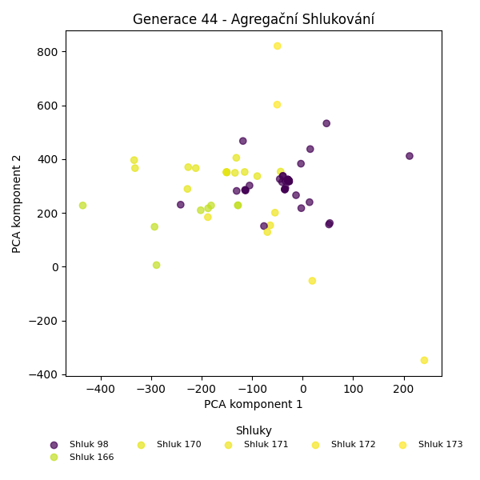
Posun centroidů mezi generací 43 → 44:
- Shluk 0: 25.7243
- Shluk 1: 940.4550
- Shluk 2: 813.1933
- Shluk 3: 992.5289
- Shluk 4: 238.5715
- Shluk 5: 856.8936

Generace 45

Posun centroidů mezi generací 44 → 45:
- Shluk 0: 730.7855
- Shluk 1: 799.2175
- Shluk 2: 140.6888
- Shluk 3: 943.4555

Generace 46
Posun centroidů mezi generací 45 → 46:
- Shluk 0: 783.2325
- Shluk 1: 593.9582
- Shluk 2: 138.8004
- Shluk 3: 663.2125
Generace 47


Posun centroidů mezi generací 46 → 47:
- Shluk 0: 383.6276
- Shluk 1: 749.5824
- Shluk 2: 539.1630
- Shluk 3: 542.8937
- Shluk 4: 1027.6442
- Shluk 5: 889.8942
- Shluk 6: 798.4566
- Shluk 7: 1071.5989
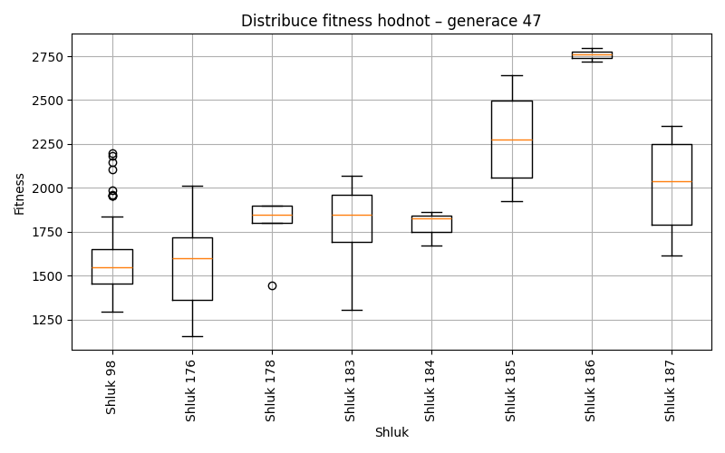
Generace 48

Posun centroidů mezi generací 47 → 48:
- Shluk 0: 423.1887
- Shluk 1: 825.7826
- Shluk 2: 511.5618
- Shluk 3: 182.9691
- Shluk 4: 975.9174
- Shluk 5: 1160.2573
- Shluk 6: 747.0881
- Shluk 7: 795.3740

Generace 49
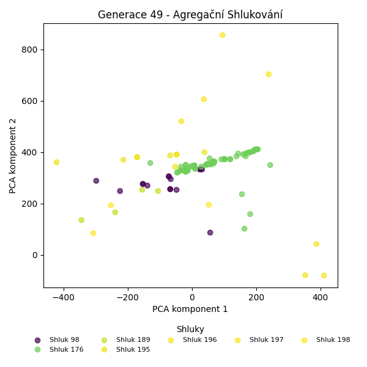

Posun centroidů mezi generací 48 → 49:
- Shluk 0: 449.5690
- Shluk 1: 1037.6314
- Shluk 2: 612.3571
- Shluk 3: 968.0776
- Shluk 4: 594.1776
- Shluk 5: 1016.6165
- Shluk 6: 589.1082
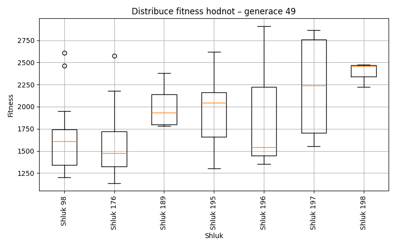
Generace 50
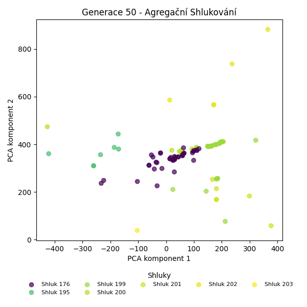

Posun centroidů mezi generací 49 → 50:
- Shluk 0: 164.5513
- Shluk 1: 759.1999
- Shluk 2: 713.9478
- Shluk 3: 1038.4932
- Shluk 4: 633.2083
- Shluk 5: 1033.4661
- Shluk 6: 702.9637
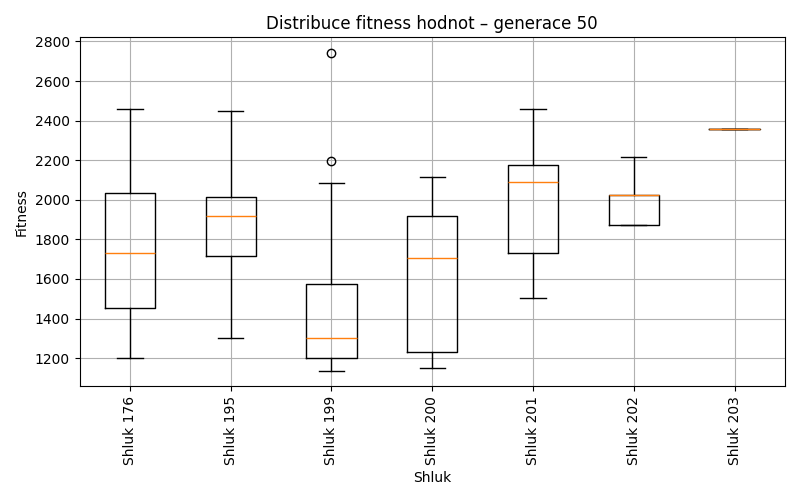
Generace 51
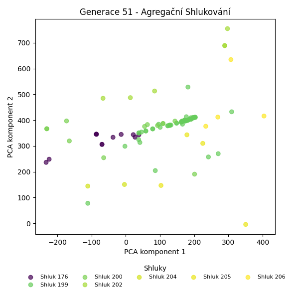

Posun centroidů mezi generací 50 → 51:
- Shluk 0: 84.1552
- Shluk 1: 469.3299
- Shluk 2: 710.2272
- Shluk 3: 965.4276
- Shluk 4: 685.7459
- Shluk 5: 829.0048
- Shluk 6: 595.4191

Generace 52

Posun centroidů mezi generací 51 → 52:
- Shluk 0: 46.6127
- Shluk 1: 932.8691
- Shluk 2: 155.0823
- Shluk 3: 1129.0613
- Shluk 4: 147.0930
- Shluk 5: 177.6566

Generace 53
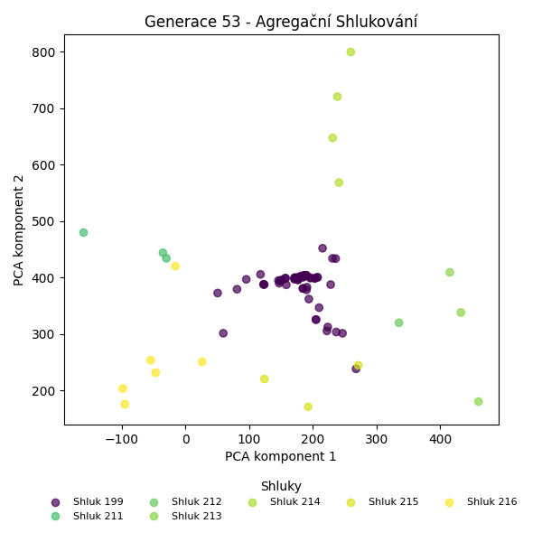
Posun centroidů mezi generací 52 → 53:
- Shluk 0: 56.7060
- Shluk 1: 1039.5599
- Shluk 2: 588.3250
- Shluk 3: 969.6102
- Shluk 4: 849.9375
- Shluk 5: 765.6250
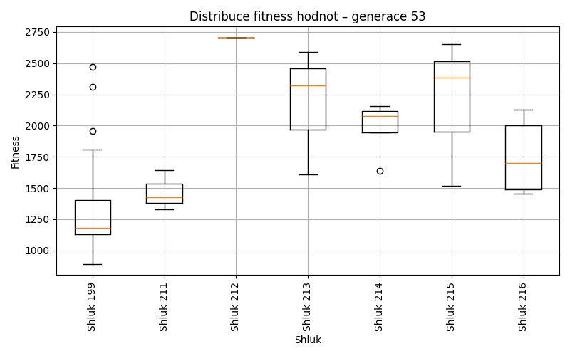
Generace 54

Posun centroidů mezi generací 53 → 54:
- Shluk 0: 30.8941
- Shluk 1: 918.1271
- Shluk 2: 692.9416
- Shluk 3: 824.3895
- Shluk 4: 665.7613
- Shluk 5: 816.7906
- Shluk 6: 934.8688

Generace 55

Posun centroidů mezi generací 54 → 55:
- Shluk 0: 581.1054
- Shluk 1: 725.5357
- Shluk 2: 709.9993
- Shluk 3: 917.1735
- Shluk 4: 653.4144
- Shluk 5: 775.5284
- Shluk 6: 997.4555

Generace 56

Posun centroidů mezi generací 55 → 56:
- Shluk 0: 581.5044
- Shluk 1: 332.5375
- Shluk 2: 207.3296
- Shluk 3: 1067.8573
- Shluk 4: 620.0303
- Shluk 5: 599.4677
- Shluk 6: 1244.4612
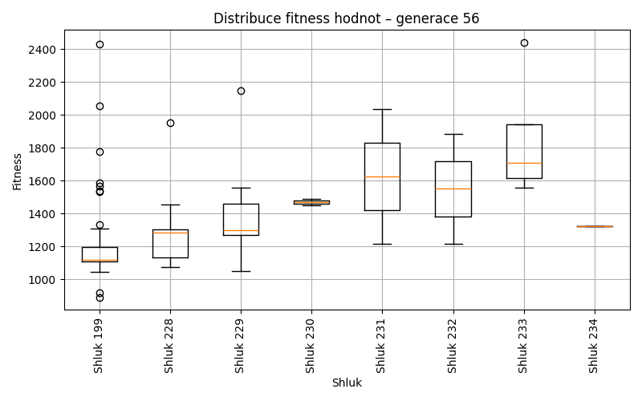
Generace 57
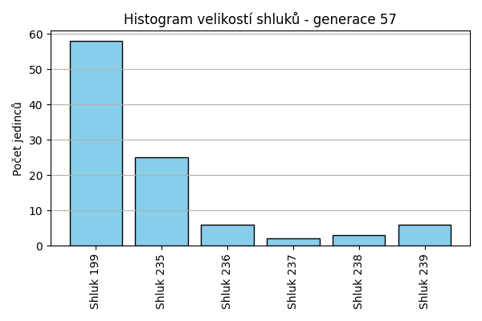
Posun centroidů mezi generací 56 → 57:
- Shluk 0: 276.6488
- Shluk 1: 334.3341
- Shluk 2: 794.8694
- Shluk 3: 249.2925
- Shluk 4: 868.0336
- Shluk 5: 576.4336

Generace 58

Posun centroidů mezi generací 57 → 58:
- Shluk 0: 263.6763
- Shluk 1: 530.6181
- Shluk 2: 954.4165
- Shluk 3: 867.7478
- Shluk 4: 673.0896

Generace 59

Posun centroidů mezi generací 58 → 59:
- Shluk 0: 190.2242
- Shluk 1: 590.6983
- Shluk 2: 809.1879
- Shluk 3: 953.4976
- Shluk 4: 649.5710
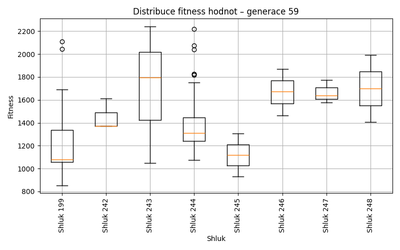
Generace 60

Posun centroidů mezi generací 59 → 60:
- Shluk 0: 221.8967
- Shluk 1: 730.1596
- Shluk 2: 331.2579
- Shluk 3: 760.5177
- Shluk 4: 785.4719
- Shluk 5: 885.8815
- Shluk 6: 943.7964
- Shluk 7: 909.3208
Generace 61
Posun centroidů mezi generací 60 → 61:
- Shluk 0: 25.0804
- Shluk 1: 515.2586
- Shluk 2: 467.2596
- Shluk 3: 791.5913
- Shluk 4: 976.4588
- Shluk 5: 988.2901
- Shluk 6: 953.1899
- Shluk 7: 874.3035

Generace 62

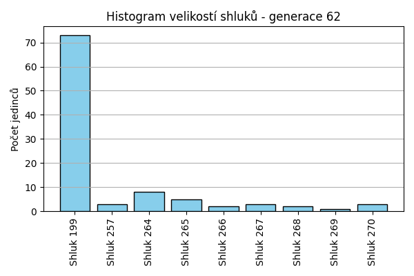
Posun centroidů mezi generací 61 → 62:
- Shluk 0: 33.0455
- Shluk 1: 610.3360
- Shluk 2: 707.3881
- Shluk 3: 742.3607
- Shluk 4: 998.6179
- Shluk 5: 959.2299
- Shluk 6: 1101.9701
- Shluk 7: 969.6956
Generace 63
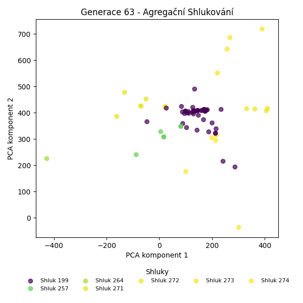

Posun centroidů mezi generací 62 → 63:
- Shluk 0: 32.8740
- Shluk 1: 792.6276
- Shluk 2: 939.5294
- Shluk 3: 251.4193
- Shluk 4: 709.2288
- Shluk 5: 756.5874
- Shluk 6: 1257.6930

Generace 64

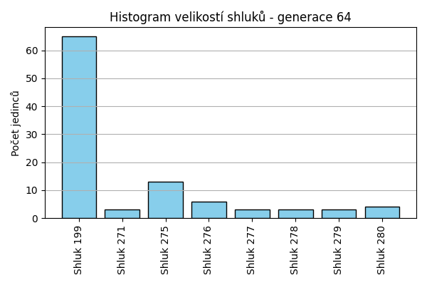
Posun centroidů mezi generací 63 → 64:
- Shluk 0: 406.3543
- Shluk 1: 924.0977
- Shluk 2: 594.3708
- Shluk 3: 284.2932
- Shluk 4: 699.6300
- Shluk 5: 74.6731
- Shluk 6: 1056.7490
Generace 65

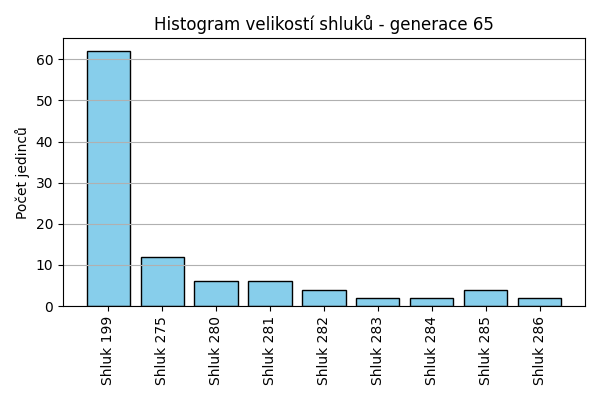
Posun centroidů mezi generací 64 → 65:
- Shluk 0: 698.4017
- Shluk 1: 718.8749
- Shluk 2: 635.2994
- Shluk 3: 595.4725
- Shluk 4: 908.3261
- Shluk 5: 962.0516
- Shluk 6: 477.9693
- Shluk 7: 857.0460

Generace 66

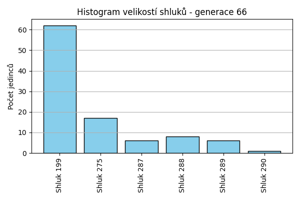
Posun centroidů mezi generací 65 → 66:
- Shluk 0: 609.7794
- Shluk 1: 411.9973
- Shluk 2: 701.8685
- Shluk 3: 701.4695
- Shluk 4: 262.1249
- Shluk 5: 1197.5860

Generace 67
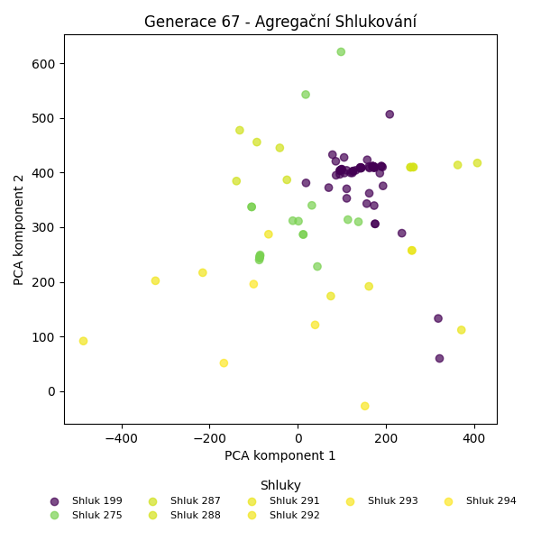

Posun centroidů mezi generací 66 → 67:
- Shluk 0: 36.8417
- Shluk 1: 130.7431
- Shluk 2: 297.5562
- Shluk 3: 960.5919
- Shluk 4: 360.7907
- Shluk 5: 989.5506
Generace 68


Posun centroidů mezi generací 67 → 68:
- Shluk 0: 626.2196
- Shluk 1: 533.8741
- Shluk 2: 613.5490
- Shluk 3: 831.6290
- Shluk 4: 784.7316
- Shluk 5: 1128.1974
- Shluk 6: 906.1410
- Shluk 7: 1101.3962
Generace 69

Posun centroidů mezi generací 68 → 69:
- Shluk 0: 628.7695
- Shluk 1: 437.2631
- Shluk 2: 466.1946
- Shluk 3: 952.6494
- Shluk 4: 571.8110
- Shluk 5: 1000.4041
- Shluk 6: 244.5543
- Shluk 7: 833.1073

Generace 70

Posun centroidů mezi generací 69 → 70:
- Shluk 0: 904.1003
- Shluk 1: 458.2722
- Shluk 2: 443.8014
- Shluk 3: 1009.1001
- Shluk 4: 366.7950
- Shluk 5: 981.2289
Generace 71

Posun centroidů mezi generací 70 → 71:
- Shluk 0: 633.0781
- Shluk 1: 603.1537
- Shluk 2: 898.7432
- Shluk 3: 800.3936
- Shluk 4: 735.5183

Generace 72

Posun centroidů mezi generací 71 → 72:
- Shluk 0: 38.6296
- Shluk 1: 743.9072
- Shluk 2: 931.2721
- Shluk 3: 813.5209
- Shluk 4: 1326.5231

Generace 73

Posun centroidů mezi generací 72 → 73:
- Shluk 0: 869.6100
- Shluk 1: 449.1059
- Shluk 2: 856.6595
Generace 74


Posun centroidů mezi generací 73 → 74:
- Shluk 0: 854.1732
- Shluk 1: 543.6993
- Shluk 2: 914.1904
Generace 75

Posun centroidů mezi generací 74 → 75:
- Shluk 0: 604.5057
- Shluk 1: 876.8567
- Shluk 2: 547.7323
- Shluk 3: 945.0393
- Shluk 4: 849.8204
- Shluk 5: 970.0888

Generace 76

Posun centroidů mezi generací 75 → 76:
- Shluk 0: 668.3357
- Shluk 1: 887.0926
- Shluk 2: 16.9169
- Shluk 3: 815.5490
- Shluk 4: 670.1034
- Shluk 5: 800.2011

Generace 77


Posun centroidů mezi generací 76 → 77:
- Shluk 0: 315.8475
- Shluk 1: 978.8416
- Shluk 2: 498.9126
- Shluk 3: 786.5226
- Shluk 4: 930.5829
- Shluk 5: 1042.9930

Generace 78
Posun centroidů mezi generací 77 → 78:
- Shluk 0: 440.7062
- Shluk 1: 910.6852
- Shluk 2: 754.9782
- Shluk 3: 678.1723
- Shluk 4: 751.9761
- Shluk 5: 1011.4176

Generace 79

Posun centroidů mezi generací 78 → 79:
- Shluk 0: 171.2881
- Shluk 1: 424.9115
- Shluk 2: 240.9053
- Shluk 3: 618.3751
- Shluk 4: 781.8668
- Shluk 5: 1000.5580
- Shluk 6: 372.7768
- Shluk 7: 950.2529
Generace 80

Posun centroidů mezi generací 79 → 80:
- Shluk 0: 277.3283
- Shluk 1: 482.2516
- Shluk 2: 248.5650
- Shluk 3: 903.4907
- Shluk 4: 753.4948
- Shluk 5: 114.8559
- Shluk 6: 728.5841

Generace 81


Posun centroidů mezi generací 80 → 81:
- Shluk 0: 403.6534
- Shluk 1: 489.5427
- Shluk 2: 807.7878
- Shluk 3: 868.3300
- Shluk 4: 657.5418
- Shluk 5: 939.8433
- Shluk 6: 879.2194
Generace 82

Posun centroidů mezi generací 81 → 82:
- Shluk 0: 406.6217
- Shluk 1: 786.2729
- Shluk 2: 490.5069
- Shluk 3: 685.8565
- Shluk 4: 1023.1630
- Shluk 5: 1038.2875
- Shluk 6: 687.5826
Generace 83


Posun centroidů mezi generací 82 → 83:
- Shluk 0: 53.4734
- Shluk 1: 798.9098
- Shluk 2: 886.2788
- Shluk 3: 163.2970
- Shluk 4: 1022.1923
- Shluk 5: 1095.4398
- Shluk 6: 730.2973
Generace 84

Posun centroidů mezi generací 83 → 84:
- Shluk 0: 708.3946
- Shluk 1: 627.9774
- Shluk 2: 824.4140
- Shluk 3: 735.6918
- Shluk 4: 913.3008
- Shluk 5: 953.0843
- Shluk 6: 159.3362
- Shluk 7: 897.7769
- Shluk 8: 840.3788

Generace 85


Posun centroidů mezi generací 84 → 85:
- Shluk 0: 677.0123
- Shluk 1: 533.3096
- Shluk 2: 53.3111
- Shluk 3: 966.4000
- Shluk 4: 950.0971
- Shluk 5: 919.4217
- Shluk 6: 902.1680
- Shluk 7: 135.4885
- Shluk 8: 821.3162

Generace 86

Posun centroidů mezi generací 85 → 86:
- Shluk 0: 375.1701
- Shluk 1: 793.1334
- Shluk 2: 407.7975
- Shluk 3: 811.3477
- Shluk 4: 874.6132
- Shluk 5: 968.2962
- Shluk 6: 1180.0174
Generace 87
Posun centroidů mezi generací 86 → 87:
- Shluk 0: 696.0544
- Shluk 1: 696.1532
- Shluk 2: 654.8369
- Shluk 3: 583.1982
- Shluk 4: 912.0856
- Shluk 5: 829.6755
- Shluk 6: 1369.0603

Generace 88

Posun centroidů mezi generací 87 → 88:
- Shluk 0: 646.0628
- Shluk 1: 29.1115
- Shluk 2: 295.4789
- Shluk 3: 633.2405
- Shluk 4: 227.4130
- Shluk 5: 760.9798
Generace 89
Posun centroidů mezi generací 88 → 89:
- Shluk 0: 555.6531
- Shluk 1: 706.2362
- Shluk 2: 254.2551
- Shluk 3: 895.5694
- Shluk 4: 963.5714

Generace 90

Posun centroidů mezi generací 89 → 90:
- Shluk 0: 29.8196
- Shluk 1: 919.2714
- Shluk 2: 1006.2703
- Shluk 3: 980.2288
- Shluk 4: 931.7534
Generace 91
Posun centroidů mezi generací 90 → 91:
- Shluk 0: 546.6019
- Shluk 1: 792.7782
- Shluk 2: 1038.4667
- Shluk 3: 127.9765
Generace 92

Posun centroidů mezi generací 91 → 92:
- Shluk 0: 553.5897
- Shluk 1: 517.4344
- Shluk 2: 754.0065
- Shluk 3: 923.9665
Generace 93


Posun centroidů mezi generací 92 → 93:
- Shluk 0: 28.5197
- Shluk 1: 892.1476
- Shluk 2: 155.4638
- Shluk 3: 745.4380
- Shluk 4: 981.4803
- Shluk 5: 891.3967
Generace 94

Posun centroidů mezi generací 93 → 94:
- Shluk 0: 23.8528
- Shluk 1: 778.2642
- Shluk 2: 1013.1623
- Shluk 3: 528.7363
- Shluk 4: 1251.8233

Generace 95


Posun centroidů mezi generací 94 → 95:
- Shluk 0: 378.7018
- Shluk 1: 92.2256
- Shluk 2: 962.7159
- Shluk 3: 840.8455
- Shluk 4: 1010.6110
Generace 96

Posun centroidů mezi generací 95 → 96:
- Shluk 0: 647.8162
- Shluk 1: 497.0975
- Shluk 2: 411.5470
- Shluk 3: 951.9063
- Shluk 4: 736.6701
- Shluk 5: 506.8844
- Shluk 6: 916.4535

Generace 97

Posun centroidů mezi generací 96 → 97:
- Shluk 0: 515.2334
- Shluk 1: 714.1292
- Shluk 2: 797.5015
- Shluk 3: 965.0744
- Shluk 4: 596.5827

Generace 98


Posun centroidů mezi generací 97 → 98:
- Shluk 0: 39.0994
- Shluk 1: 886.1200
- Shluk 2: 301.5481
- Shluk 3: 1237.7804
- Shluk 4: 733.4877
Generace 99

Posun centroidů mezi generací 98 → 99:
- Shluk 0: 55.9647
- Shluk 1: 618.0686
- Shluk 2: 746.9130
- Shluk 3: 1108.5930
- Shluk 4: 784.9632
- Shluk 5: 819.7111
- Shluk 6: 1123.9128
Generace 100

Posun centroidů mezi generací 99 → 100:
- Shluk 0: 34.0380
- Shluk 1: 878.4164
- Shluk 2: 803.2386
- Shluk 3: 979.0836
- Shluk 4: 869.1873
- Shluk 5: 683.5519
- Shluk 6: 1002.4805
- Shluk 7: 1095.8627
Generace 101

Posun centroidů mezi generací 100 → 101:
- Shluk 0: 387.2261
- Shluk 1: 739.2046
- Shluk 2: 203.0065
- Shluk 3: 898.9057
- Shluk 4: 954.9643
- Shluk 5: 929.5229
- Shluk 6: 1331.8458
Generace 102

Posun centroidů mezi generací 101 → 102:
- Shluk 0: 600.5549
- Shluk 1: 508.9515
- Shluk 2: 666.0231
- Shluk 3: 963.0039
- Shluk 4: 1024.4509
- Shluk 5: 863.4199
- Shluk 6: 1426.8657

Generace 103

Posun centroidů mezi generací 102 → 103:
- Shluk 0: 813.3251
- Shluk 1: 312.2762
- Shluk 2: 710.7554
- Shluk 3: 660.3325
- Shluk 4: 1016.4767
- Shluk 5: 895.9955
- Shluk 6: 1277.4115

Generace 104
Posun centroidů mezi generací 103 → 104:
- Shluk 0: 629.4899
- Shluk 1: 289.9714
- Shluk 2: 763.6603
- Shluk 3: 589.1116
- Shluk 4: 1169.1465
- Shluk 5: 1155.8022
- Shluk 6: 1317.8328
Generace 105


Posun centroidů mezi generací 104 → 105:
- Shluk 0: 15.1652
- Shluk 1: 76.3854
- Shluk 2: 776.0591
- Shluk 3: 126.0771
- Shluk 4: 1215.6170
- Shluk 5: 982.2065
- Shluk 6: 1162.8497

Generace 106

Posun centroidů mezi generací 105 → 106:
- Shluk 0: 29.1306
- Shluk 1: 84.5118
- Shluk 2: 960.5101
- Shluk 3: 1002.7288
- Shluk 4: 275.1482
- Shluk 5: 536.9292
Generace 107
Posun centroidů mezi generací 106 → 107:
- Shluk 0: 38.7630
- Shluk 1: 836.9820
- Shluk 2: 943.9255
- Shluk 3: 217.7292
- Shluk 4: 708.7598
- Shluk 5: 1179.9710

Generace 108
Posun centroidů mezi generací 107 → 108:
- Shluk 0: 25.2540
- Shluk 1: 739.5947
- Shluk 2: 170.3765
- Shluk 3: 850.5810
- Shluk 4: 130.6511
- Shluk 5: 679.6028

Generace 109


Posun centroidů mezi generací 108 → 109:
- Shluk 0: 25.4785
- Shluk 1: 631.1709
- Shluk 2: 215.9165
- Shluk 3: 798.1854
- Shluk 4: 814.5437
- Shluk 5: 874.8028
- Shluk 6: 799.9334
- Shluk 7: 1134.6232
Generace 110


Posun centroidů mezi generací 109 → 110:
- Shluk 0: 750.5953
- Shluk 1: 843.4278
- Shluk 2: 709.3195
- Shluk 3: 447.1137
- Shluk 4: 972.1059
- Shluk 5: 1012.4012
- Shluk 6: 766.5923
- Shluk 7: 921.9400
- Shluk 8: 373.9651
Generace 111


Posun centroidů mezi generací 110 → 111:
- Shluk 0: 1042.8441
- Shluk 1: 971.3191
- Shluk 2: 445.1525
- Shluk 3: 469.1667
- Shluk 4: 1008.7989
- Shluk 5: 832.4830
Generace 112


Posun centroidů mezi generací 111 → 112:
- Shluk 0: 780.3795
- Shluk 1: 674.4689
- Shluk 2: 730.9272
- Shluk 3: 695.5927
- Shluk 4: 731.4659
- Shluk 5: 1260.3335
Generace 113
Posun centroidů mezi generací 112 → 113:
- Shluk 0: 168.9977
- Shluk 1: 51.7769
- Shluk 2: 1179.6378
- Shluk 3: 882.6138
- Shluk 4: 807.6887
- Shluk 5: 1324.1049
- Shluk 6: 855.2211
- Shluk 7: 295.8415

Generace 114

Posun centroidů mezi generací 113 → 114:
- Shluk 0: 692.7009
- Shluk 1: 506.5702
- Shluk 2: 982.7397
- Shluk 3: 357.3734
- Shluk 4: 628.2702
- Shluk 5: 901.1663
- Shluk 6: 906.9001
- Shluk 7: 1163.6023
Generace 115


Posun centroidů mezi generací 114 → 115:
- Shluk 0: 802.0943
- Shluk 1: 655.6470
- Shluk 2: 920.0890
- Shluk 3: 606.3649
- Shluk 4: 795.9982
- Shluk 5: 978.2938
- Shluk 6: 86.0479

Generace 116

Posun centroidů mezi generací 115 → 116:
- Shluk 0: 652.6618
- Shluk 1: 548.2071
- Shluk 2: 1329.2826
- Shluk 3: 29.1218
- Shluk 4: 947.6839

Generace 117

Posun centroidů mezi generací 116 → 117:
- Shluk 0: 570.0790
- Shluk 1: 426.4584
- Shluk 2: 1106.7035
- Shluk 3: 837.4855
- Shluk 4: 841.7869

Generace 118


Posun centroidů mezi generací 117 → 118:
- Shluk 0: 320.5202
- Shluk 1: 589.9133
- Shluk 2: 768.8967
- Shluk 3: 908.9020
- Shluk 4: 954.2425
- Shluk 5: 359.1009
- Shluk 6: 1219.0852
Generace 119

Posun centroidů mezi generací 118 → 119:
- Shluk 0: 705.4317
- Shluk 1: 731.1260
- Shluk 2: 436.6958
- Shluk 3: 1073.2051
- Shluk 4: 849.0048
- Shluk 5: 813.7802
- Shluk 6: 1031.3215
Generace 120


Posun centroidů mezi generací 119 → 120:
- Shluk 0: 744.5420
- Shluk 1: 751.8273
- Shluk 2: 283.6859
- Shluk 3: 995.4681
- Shluk 4: 1007.9796
- Shluk 5: 1376.2445
- Shluk 6: 1120.9424

Generace 121
Posun centroidů mezi generací 120 → 121:
- Shluk 0: 730.8253
- Shluk 1: 768.3814
- Shluk 2: 456.8300
- Shluk 3: 850.8592
- Shluk 4: 885.1292
- Shluk 5: 315.3170

Generace 122

Posun centroidů mezi generací 121 → 122:
- Shluk 0: 30.7601
- Shluk 1: 941.8880
- Shluk 2: 617.4248
- Shluk 3: 971.4418
- Shluk 4: 1033.5900
- Shluk 5: 920.8617
Generace 123


Posun centroidů mezi generací 122 → 123:
- Shluk 0: 609.6809
- Shluk 1: 664.9099
- Shluk 2: 746.8424
- Shluk 3: 1155.1682
- Shluk 4: 916.9876
- Shluk 5: 1015.5666

Generace 124

Posun centroidů mezi generací 123 → 124:
- Shluk 0: 597.6689
- Shluk 1: 868.5340
- Shluk 2: 834.9225
- Shluk 3: 1013.2669

Generace 125
Posun centroidů mezi generací 124 → 125:
- Shluk 0: 26.2999
- Shluk 1: 597.6693
- Shluk 2: 860.4299
- Shluk 3: 528.6637
Generace 126

Posun centroidů mezi generací 125 → 126:
- Shluk 0: 20.9288
- Shluk 1: 509.9000
- Shluk 2: 986.1814
- Shluk 3: 862.6624
- Shluk 4: 1023.2939
- Shluk 5: 964.1047
- Shluk 6: 1244.1222
- Shluk 7: 736.3378
Generace 127

Posun centroidů mezi generací 126 → 127:
- Shluk 0: 21.3295
- Shluk 1: 742.3699
- Shluk 2: 802.3365
- Shluk 3: 293.8162
Generace 128

Posun centroidů mezi generací 127 → 128:
- Shluk 0: 745.0657
- Shluk 1: 512.7862
- Shluk 2: 659.7264
- Shluk 3: 1219.7748

Generace 129
Posun centroidů mezi generací 128 → 129:
- Shluk 0: 744.8244
- Shluk 1: 557.2241
- Shluk 2: 866.2863
- Shluk 3: 1023.2969
- Shluk 4: 811.5108

Generace 130

Posun centroidů mezi generací 129 → 130:
- Shluk 0: 441.6193
- Shluk 1: 555.7918
- Shluk 2: 1087.9701
- Shluk 3: 846.4128
- Shluk 4: 430.3530
Generace 131
Posun centroidů mezi generací 130 → 131:
- Shluk 0: 449.5359
- Shluk 1: 492.0711
- Shluk 2: 895.5620
- Shluk 3: 1294.4643
- Shluk 4: 924.0514
Generace 132


Posun centroidů mezi generací 131 → 132:
- Shluk 0: 564.1871
- Shluk 1: 489.8204
- Shluk 2: 708.6843
- Shluk 3: 1154.0460
- Shluk 4: 718.2902
- Shluk 5: 962.1114
- Shluk 6: 762.1322

Generace 133
Posun centroidů mezi generací 132 → 133:
- Shluk 0: 779.2792
- Shluk 1: 25.3181
- Shluk 2: 253.6749
- Shluk 3: 768.3218
- Shluk 4: 669.1591

Generace 134

Posun centroidů mezi generací 133 → 134:
- Shluk 0: 225.6959
- Shluk 1: 495.9017
- Shluk 2: 1039.8263
- Shluk 3: 837.7735
- Shluk 4: 753.6785
Generace 135

Posun centroidů mezi generací 134 → 135:
- Shluk 0: 742.1061
- Shluk 1: 535.0554
- Shluk 2: 778.5364
- Shluk 3: 1336.9508
- Shluk 4: 91.1172
- Shluk 5: 934.1468
- Shluk 6: 837.8565

Generace 136

Posun centroidů mezi generací 135 → 136:
- Shluk 0: 96.1152
- Shluk 1: 703.0384
- Shluk 2: 790.7064
- Shluk 3: 1198.3441
- Shluk 4: 1015.9627
- Shluk 5: 949.3577
- Shluk 6: 898.2679
Generace 137

Posun centroidů mezi generací 136 → 137:
- Shluk 0: 271.6306
- Shluk 1: 759.4156
- Shluk 2: 858.1456
- Shluk 3: 601.1272
- Shluk 4: 1012.7683
- Shluk 5: 1087.5422
- Shluk 6: 358.9525
- Shluk 7: 472.9181

Generace 138
Posun centroidů mezi generací 137 → 138:
- Shluk 0: 385.4934
- Shluk 1: 232.3902
- Shluk 2: 874.5143
- Shluk 3: 779.7548
- Shluk 4: 975.3546
- Shluk 5: 432.0336
- Shluk 6: 525.8965
- Shluk 7: 928.0769
Generace 139
Posun centroidů mezi generací 138 → 139:
- Shluk 0: 276.4931
- Shluk 1: 452.4612
- Shluk 2: 755.5474
- Shluk 3: 644.3009
- Shluk 4: 1314.8567
- Shluk 5: 163.1825
- Shluk 6: 1036.6329

Generace 140

Posun centroidů mezi generací 139 → 140:
- Shluk 0: 256.1833
- Shluk 1: 566.5268
- Shluk 2: 888.4673
- Shluk 3: 585.1708
- Shluk 4: 786.4751
- Shluk 5: 839.3614

Generace 141
Posun centroidů mezi generací 140 → 141:
- Shluk 0: 33.1817
- Shluk 1: 854.4381
- Shluk 2: 1000.1105
- Shluk 3: 859.2780
- Shluk 4: 1339.7671
Generace 142
Posun centroidů mezi generací 141 → 142:
- Shluk 0: 17.8849
- Shluk 1: 973.1661
- Shluk 2: 978.0976
- Shluk 3: 772.2499
Generace 143

Posun centroidů mezi generací 142 → 143:
- Shluk 0: 27.2148
- Shluk 1: 929.3619
- Shluk 2: 1054.4633
- Shluk 3: 967.6554

Generace 144

Posun centroidů mezi generací 143 → 144:
- Shluk 0: 21.8717
- Shluk 1: 843.3223
- Shluk 2: 1141.9873
- Shluk 3: 965.3990
- Shluk 4: 853.9459

Generace 145
Posun centroidů mezi generací 144 → 145:
- Shluk 0: 25.2751
- Shluk 1: 1128.1250
- Shluk 2: 996.2154
- Shluk 3: 283.4691
- Shluk 4: 881.6151
- Shluk 5: 245.8385
Generace 146

Posun centroidů mezi generací 145 → 146:
- Shluk 0: 21.1078
- Shluk 1: 850.3423
- Shluk 2: 1043.0826
- Shluk 3: 958.4879
- Shluk 4: 843.2044
- Shluk 5: 755.8457

Generace 147

Posun centroidů mezi generací 146 → 147:
- Shluk 0: 26.5473
- Shluk 1: 773.5375
- Shluk 2: 1041.1657
- Shluk 3: 938.5742
- Shluk 4: 931.4564
- Shluk 5: 651.8585
- Shluk 6: 816.4603
Generace 148

Posun centroidů mezi generací 147 → 148:
- Shluk 0: 16.2773
- Shluk 1: 916.3017
- Shluk 2: 947.0831
- Shluk 3: 976.6984
- Shluk 4: 957.5233

Generace 149

Posun centroidů mezi generací 148 → 149:
- Shluk 0: 18.4740
- Shluk 1: 977.6647
- Shluk 2: 1014.2936
- Shluk 3: 829.6735
- Shluk 4: 837.1987
Generace 150


Posun centroidů mezi generací 149 → 150:
- Shluk 0: 21.9333
- Shluk 1: 1023.0060
- Shluk 2: 1091.8482
- Shluk 3: 841.4917
- Shluk 4: 990.6442

Generace 151


Posun centroidů mezi generací 150 → 151:
- Shluk 0: 429.0018
- Shluk 1: 702.7677
- Shluk 2: 735.4378
- Shluk 3: 1093.2670
- Shluk 4: 1137.4625
- Shluk 5: 1120.8966
- Shluk 6: 957.1023

Generace 152


Posun centroidů mezi generací 151 → 152:
- Shluk 0: 421.9770
- Shluk 1: 833.9226
- Shluk 2: 865.0891
- Shluk 3: 1081.3338
- Shluk 4: 265.0850
- Shluk 5: 926.3186
- Shluk 6: 912.1759
Generace 153

Posun centroidů mezi generací 152 → 153:
- Shluk 0: 24.2945
- Shluk 1: 927.0433
- Shluk 2: 874.2535
- Shluk 3: 214.6222
Generace 154
Posun centroidů mezi generací 153 → 154:
- Shluk 0: 597.4277
- Shluk 1: 977.2504
- Shluk 2: 495.4054
- Shluk 3: 828.9972

Generace 155

Posun centroidů mezi generací 154 → 155:
- Shluk 0: 585.8082
- Shluk 1: 941.3919
- Shluk 2: 644.8340
- Shluk 3: 1017.9296
- Shluk 4: 815.8333
- Shluk 5: 1052.6006
Generace 156

Posun centroidů mezi generací 155 → 156:
- Shluk 0: 35.1833
- Shluk 1: 1035.4042
- Shluk 2: 1070.3752
- Shluk 3: 1057.6338
- Shluk 4: 738.7996
Generace 157

Posun centroidů mezi generací 156 → 157:
- Shluk 0: 520.0054
- Shluk 1: 852.4103
- Shluk 2: 901.4390
- Shluk 3: 652.6261
- Shluk 4: 743.6455

Generace 158

Posun centroidů mezi generací 157 → 158:
- Shluk 0: 561.5462
- Shluk 1: 636.4989
- Shluk 2: 659.1857
- Shluk 3: 799.0915
- Shluk 4: 731.9548

Generace 159
Posun centroidů mezi generací 158 → 159:
- Shluk 0: 734.0619
- Shluk 1: 959.4568
- Shluk 2: 21.8726
- Shluk 3: 1145.2215
- Shluk 4: 911.1883
- Shluk 5: 1137.6405
Generace 160

Posun centroidů mezi generací 159 → 160:
- Shluk 0: 781.9508
- Shluk 1: 812.3058
- Shluk 2: 737.7189
- Shluk 3: 1131.4132
- Shluk 4: 790.4767
- Shluk 5: 714.0632

Generace 161


Posun centroidů mezi generací 160 → 161:
- Shluk 0: 465.8054
- Shluk 1: 824.6204
- Shluk 2: 320.5853
- Shluk 3: 932.9063
- Shluk 4: 269.5430
- Shluk 5: 1112.0147
Generace 162
Posun centroidů mezi generací 161 → 162:
- Shluk 0: 506.9207
- Shluk 1: 826.3377
- Shluk 2: 862.8207
- Shluk 3: 860.2499
- Shluk 4: 893.2782
- Shluk 5: 765.5285
Generace 163


Posun centroidů mezi generací 162 → 163:
- Shluk 0: 492.3307
- Shluk 1: 691.7004
- Shluk 2: 905.1493
- Shluk 3: 806.7054

Generace 164
Posun centroidů mezi generací 163 → 164:
- Shluk 0: 283.5815
- Shluk 1: 686.6419
- Shluk 2: 896.0697
- Shluk 3: 940.1305
Generace 165

Posun centroidů mezi generací 164 → 165:
- Shluk 0: 296.2164
- Shluk 1: 813.6210
- Shluk 2: 1024.2122
- Shluk 3: 1025.0951
- Shluk 4: 921.2309
Generace 166


Posun centroidů mezi generací 165 → 166:
- Shluk 0: 17.6111
- Shluk 1: 1001.4999
- Shluk 2: 1039.9470
- Shluk 3: 885.0265
- Shluk 4: 1096.2226
- Shluk 5: 948.0976
- Shluk 6: 374.9441

Generace 167


Posun centroidů mezi generací 166 → 167:
- Shluk 0: 15.4671
- Shluk 1: 913.1696
- Shluk 2: 959.9922
- Shluk 3: 916.4418
- Shluk 4: 1070.0301
- Shluk 5: 257.3495
- Shluk 6: 1022.8975
Generace 168

Posun centroidů mezi generací 167 → 168:
- Shluk 0: 35.4940
- Shluk 1: 278.6833
- Shluk 2: 717.3052
- Shluk 3: 1096.9935
- Shluk 4: 1009.4661
- Shluk 5: 1072.1877
- Shluk 6: 777.2057
Generace 169
Posun centroidů mezi generací 168 → 169:
- Shluk 0: 25.9227
- Shluk 1: 800.2735
- Shluk 2: 827.8814
- Shluk 3: 1090.2449
- Shluk 4: 921.9901

Generace 170

Posun centroidů mezi generací 169 → 170:
- Shluk 0: 487.1494
- Shluk 1: 660.8753
- Shluk 2: 676.7797
- Shluk 3: 966.4653
- Shluk 4: 765.9975
Generace 171


Posun centroidů mezi generací 170 → 171:
- Shluk 0: 883.9072
- Shluk 1: 938.0011
- Shluk 2: 29.9326
- Shluk 3: 908.0157
- Shluk 4: 912.4652

Generace 172
Posun centroidů mezi generací 171 → 172:
- Shluk 0: 950.4631
- Shluk 1: 714.7706
- Shluk 2: 734.9255
- Shluk 3: 772.1250
- Shluk 4: 769.8394

Generace 173

Posun centroidů mezi generací 172 → 173:
- Shluk 0: 766.0842
- Shluk 1: 771.8237
- Shluk 2: 934.6925
- Shluk 3: 763.3512
- Shluk 4: 837.8044

Generace 174


Posun centroidů mezi generací 173 → 174:
- Shluk 0: 460.4024
- Shluk 1: 1075.6331
- Shluk 2: 984.3683
- Shluk 3: 1369.2486
- Shluk 4: 1082.8830
Generace 175

Posun centroidů mezi generací 174 → 175:
- Shluk 0: 30.1535
- Shluk 1: 1148.5691
- Shluk 2: 1010.5231
- Shluk 3: 1381.1440
- Shluk 4: 1047.3022

Generace 176

Posun centroidů mezi generací 175 → 176:
- Shluk 0: 18.5822
- Shluk 1: 1184.4775
- Shluk 2: 722.5887
- Shluk 3: 204.4053
- Shluk 4: 912.2241
- Shluk 5: 219.6884
- Shluk 6: 943.9116

Generace 177


Posun centroidů mezi generací 176 → 177:
- Shluk 0: 586.2239
- Shluk 1: 871.4780
- Shluk 2: 379.5640
- Shluk 3: 922.3208
- Shluk 4: 808.0344
- Shluk 5: 800.1576
- Shluk 6: 353.9394
Generace 178


Posun centroidů mezi generací 177 → 178:
- Shluk 0: 815.4148
- Shluk 1: 568.2353
- Shluk 2: 23.8894
- Shluk 3: 980.5909
- Shluk 4: 702.2226
- Shluk 5: 795.0562
- Shluk 6: 698.3581
Generace 179
Posun centroidů mezi generací 178 → 179:
- Shluk 0: 550.5699
- Shluk 1: 820.4126
- Shluk 2: 555.0683
- Shluk 3: 891.8761
- Shluk 4: 739.4970
- Shluk 5: 1010.5136
- Shluk 6: 1033.2777
Generace 180


Posun centroidů mezi generací 179 → 180:
- Shluk 0: 19.5847
- Shluk 1: 818.9378
- Shluk 2: 973.8983
- Shluk 3: 1015.7878
- Shluk 4: 950.5364
- Shluk 5: 1017.9566

Generace 181

Posun centroidů mezi generací 180 → 181:
- Shluk 0: 22.7913
- Shluk 1: 733.9072
- Shluk 2: 977.3235
- Shluk 3: 1017.2811
- Shluk 4: 1098.0395
- Shluk 5: 1031.3059

Generace 182

Posun centroidů mezi generací 181 → 182:
- Shluk 0: 444.8498
- Shluk 1: 957.4091
- Shluk 2: 615.1755
- Shluk 3: 889.0175
- Shluk 4: 1025.5686
- Shluk 5: 957.7859
- Shluk 6: 840.9609
Generace 183

Posun centroidů mezi generací 182 → 183:
- Shluk 0: 451.4933
- Shluk 1: 881.4005
- Shluk 2: 687.4729
- Shluk 3: 689.4794
- Shluk 4: 978.0402
- Shluk 5: 894.8065
- Shluk 6: 906.7279
Generace 184

Posun centroidů mezi generací 183 → 184:
- Shluk 0: 23.1427
- Shluk 1: 802.9126
- Shluk 2: 1091.2367
- Shluk 3: 342.5583
- Shluk 4: 993.6205
- Shluk 5: 983.6735
- Shluk 6: 881.7561
- Shluk 7: 868.2986

Generace 185

Posun centroidů mezi generací 184 → 185:
- Shluk 0: 12.2344
- Shluk 1: 217.3730
- Shluk 2: 986.6455
- Shluk 3: 950.0164
- Shluk 4: 989.6028
- Shluk 5: 936.3215
- Shluk 6: 1042.2046
- Shluk 7: 1048.9125
Generace 186

Posun centroidů mezi generací 185 → 186:
- Shluk 0: 28.7460
- Shluk 1: 971.5029
- Shluk 2: 960.5537
- Shluk 3: 883.9845
- Shluk 4: 1053.3155
- Shluk 5: 860.2923
- Shluk 6: 1267.9700
Generace 187

Posun centroidů mezi generací 186 → 187:
- Shluk 0: 369.8604
- Shluk 1: 799.2865
- Shluk 2: 987.7438
- Shluk 3: 848.5178
- Shluk 4: 1021.9428
- Shluk 5: 834.8464
- Shluk 6: 984.0553

Generace 188
Posun centroidů mezi generací 187 → 188:
- Shluk 0: 754.9079
- Shluk 1: 17.1760
- Shluk 2: 689.7015
- Shluk 3: 992.9071
- Shluk 4: 907.3345
- Shluk 5: 948.6074

Generace 189

Posun centroidů mezi generací 188 → 189:
- Shluk 0: 643.6496
- Shluk 1: 749.6564
- Shluk 2: 780.6348
- Shluk 3: 903.8171
- Shluk 4: 1081.7867

Generace 190


Posun centroidů mezi generací 189 → 190:
- Shluk 0: 13.8181
- Shluk 1: 865.9223
- Shluk 2: 896.1170
- Shluk 3: 893.3518

Generace 191

Posun centroidů mezi generací 190 → 191:
- Shluk 0: 24.1851
- Shluk 1: 1055.7291
- Shluk 2: 415.3784
- Shluk 3: 1371.5843

Generace 192

Posun centroidů mezi generací 191 → 192:
- Shluk 0: 18.0555
- Shluk 1: 1087.4065
- Shluk 2: 525.5155
- Shluk 3: 1337.2003
- Shluk 4: 921.4407
- Shluk 5: 915.4967
Generace 193
Posun centroidů mezi generací 192 → 193:
- Shluk 0: 23.2388
- Shluk 1: 932.5149
- Shluk 2: 923.2678
- Shluk 3: 972.3674
- Shluk 4: 938.4631
- Shluk 5: 911.2521
- Shluk 6: 889.9342
Generace 194

Posun centroidů mezi generací 193 → 194:
- Shluk 0: 575.1052
- Shluk 1: 514.6434
- Shluk 2: 1007.5309
- Shluk 3: 96.5827
- Shluk 4: 1079.9465
Generace 195


Posun centroidů mezi generací 194 → 195:
- Shluk 0: 705.6905
- Shluk 1: 21.2753
- Shluk 2: 889.0136
- Shluk 3: 107.8457
- Shluk 4: 957.5136
Generace 196

Posun centroidů mezi generací 195 → 196:
- Shluk 0: 581.9819
- Shluk 1: 837.0052
- Shluk 2: 755.1755
- Shluk 3: 1026.3043
- Shluk 4: 981.6851
- Shluk 5: 898.3222
- Shluk 6: 550.3394
Generace 197
Posun centroidů mezi generací 196 → 197:
- Shluk 0: 598.9065
- Shluk 1: 1096.3700
- Shluk 2: 1011.4959
- Shluk 3: 950.4117
- Shluk 4: 850.6034
- Shluk 5: 1102.2927
Generace 198

Posun centroidů mezi generací 197 → 198:
- Shluk 0: 26.1434
- Shluk 1: 742.9996
- Shluk 2: 1128.8386
- Shluk 3: 885.6283
- Shluk 4: 773.0387
- Shluk 5: 1050.0531

Generace 199

Posun centroidů mezi generací 198 → 199:
- Shluk 0: 14.8566
- Shluk 1: 877.4702
- Shluk 2: 262.8873
- Shluk 3: 895.8513
- Shluk 4: 942.8817
- Shluk 5: 748.0765
Generace 200


Posun centroidů mezi generací 199 → 200:
- Shluk 0: 711.7952
- Shluk 1: 844.4054
- Shluk 2: 854.8138
- Shluk 3: 835.6218
- Shluk 4: 754.9140
- Shluk 5: 811.3984
- Shluk 6: 831.5934

Generace 201

Posun centroidů mezi generací 200 → 201:
- Shluk 0: 933.3496
- Shluk 1: 488.9364
- Shluk 2: 1025.1267
- Shluk 3: 889.0232
- Shluk 4: 558.1165
- Shluk 5: 68.0230
- Shluk 6: 936.6431
- Shluk 7: 925.9335
Generace 202
Posun centroidů mezi generací 201 → 202:
- Shluk 0: 732.5770
- Shluk 1: 776.5357
- Shluk 2: 1002.6597
- Shluk 3: 92.6612
- Shluk 4: 1059.8824

Generace 203
Posun centroidů mezi generací 202 → 203:
- Shluk 0: 21.6400
- Shluk 1: 929.7849
- Shluk 2: 1005.1457
- Shluk 3: 865.5522
- Shluk 4: 268.3190

Generace 204
Posun centroidů mezi generací 203 → 204:
- Shluk 0: 23.0844
- Shluk 1: 1027.5296
- Shluk 2: 1084.5387
- Shluk 3: 887.9261
- Shluk 4: 39.1455
- Shluk 5: 1039.5925
Generace 205

Posun centroidů mezi generací 204 → 205:
- Shluk 0: 16.8915
- Shluk 1: 1084.2969
- Shluk 2: 166.7153
- Shluk 3: 957.3619
- Shluk 4: 814.9655
- Shluk 5: 1213.4540

Generace 206
Posun centroidů mezi generací 205 → 206:
- Shluk 0: 410.9632
- Shluk 1: 745.1273
- Shluk 2: 1023.9682
- Shluk 3: 990.3187
- Shluk 4: 924.6983
- Shluk 5: 1136.4123

Generace 207

Posun centroidů mezi generací 206 → 207:
- Shluk 0: 403.4781
- Shluk 1: 701.5191
- Shluk 2: 1158.3374
- Shluk 3: 393.2531
- Shluk 4: 991.8866
- Shluk 5: 1109.7600
Generace 208
Posun centroidů mezi generací 207 → 208:
- Shluk 0: 34.5704
- Shluk 1: 1028.7978
- Shluk 2: 906.6763
- Shluk 3: 1102.4894
- Shluk 4: 883.7783
- Shluk 5: 1148.1747
Generace 209

Posun centroidů mezi generací 208 → 209:
- Shluk 0: 22.3535
- Shluk 1: 1052.2821
- Shluk 2: 802.0815
- Shluk 3: 724.3651
- Shluk 4: 980.6912
Generace 210
Posun centroidů mezi generací 209 → 210:
- Shluk 0: 497.9700
- Shluk 1: 789.4648
- Shluk 2: 802.8583
- Shluk 3: 1040.9409
- Shluk 4: 1159.9907

Generace 211

Posun centroidů mezi generací 210 → 211:
- Shluk 0: 763.5032
- Shluk 1: 371.6243
- Shluk 2: 885.4060
- Shluk 3: 1083.4917
- Shluk 4: 1100.1349
- Shluk 5: 964.8618
- Shluk 6: 968.7524
Generace 212

Posun centroidů mezi generací 211 → 212:
- Shluk 0: 589.2511
- Shluk 1: 860.2623
- Shluk 2: 705.9841
- Shluk 3: 953.3564
- Shluk 4: 808.2111
- Shluk 5: 867.2782
- Shluk 6: 706.3801

Generace 213
Posun centroidů mezi generací 212 → 213:
- Shluk 0: 42.7260
- Shluk 1: 1084.2780
- Shluk 2: 1273.7790
- Shluk 3: 833.9902
Generace 214

Posun centroidů mezi generací 213 → 214:
- Shluk 0: 488.5114
- Shluk 1: 794.5968
- Shluk 2: 1307.4795
- Shluk 3: 169.3396
Generace 215


Posun centroidů mezi generací 214 → 215:
- Shluk 0: 493.9970
- Shluk 1: 711.0997
- Shluk 2: 851.4881
- Shluk 3: 1030.4985
- Shluk 4: 931.2193
- Shluk 5: 184.2089
- Shluk 6: 1002.2669
Generace 216

Posun centroidů mezi generací 215 → 216:
- Shluk 0: 13.8075
- Shluk 1: 863.6780
- Shluk 2: 950.2671
- Shluk 3: 1000.5743
- Shluk 4: 132.5711
- Shluk 5: 857.8599
- Shluk 6: 1007.2355
Generace 217

Posun centroidů mezi generací 216 → 217:
- Shluk 0: 25.0420
- Shluk 1: 787.6263
- Shluk 2: 872.7401
- Shluk 3: 965.7994
- Shluk 4: 998.9862
- Shluk 5: 908.6795
- Shluk 6: 818.8640
- Shluk 7: 1312.3036
- Shluk 8: 1197.6904
Generace 218

Posun centroidů mezi generací 217 → 218:
- Shluk 0: 26.9181
- Shluk 1: 887.9594
- Shluk 2: 218.8752
- Shluk 3: 1031.2729
- Shluk 4: 997.2199

Generace 219

Posun centroidů mezi generací 218 → 219:
- Shluk 0: 644.0612
- Shluk 1: 797.4104
- Shluk 2: 671.7034
- Shluk 3: 1097.4961
- Shluk 4: 1052.3337